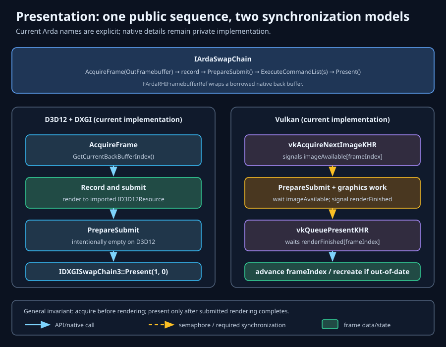
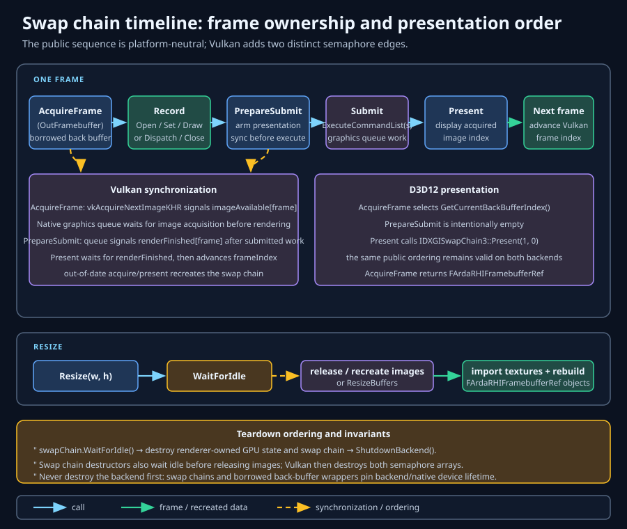
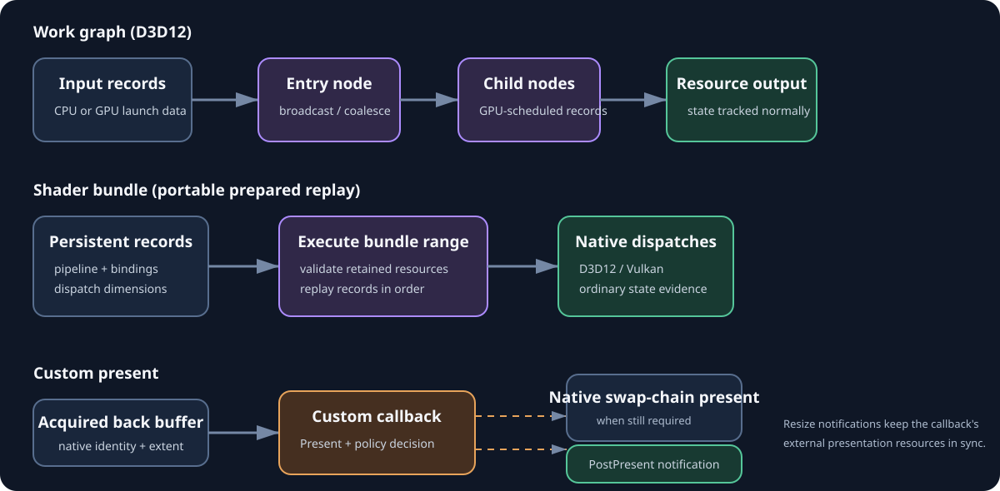

Display engine and frame lifecycle
Presentation
Presentation is the boundary where rendered images become visible. ArdaBackend hides DXGI and Vulkan object types behind IArdaWindowSurface and exposes the shared frame contract through IArdaSwapChain.
Learning objectives
After this chapter, you should be able to:
- explain why a swap chain owns several displayable images rather than one permanent screen buffer;
- distinguish a native back buffer from the Arda framebuffer that describes render attachments;
- preserve acquire, render, submit, and present ordering on both supported backends;
- install a custom-present callback without losing resize or post-present ordering;
- handle resize, minimization, Vulkan out-of-date results, and stale framebuffer references safely;
- separate general latency and present-mode concepts from controls that Arda currently exposes; and
- shut presentation down without destroying native or RHI objects still used by the GPU.
Prerequisites
Read Architecture for ownership and backend layering, RHI types & resources for texture states and framebuffers, and Commands for command-list submission. Familiarity with a desktop window library is useful, but no direct DXGI or Vulkan code is required.
Presentation fundamentals
The display engine is another consumer
A renderer writes pixels on a GPU queue. A display engine scans pixels to a monitor on a schedule. Presentation connects these asynchronous consumers: it selects an image safe for rendering, orders GPU completion before display use, and eventually makes another image available.
The image is not copied to a magical “screen” by the Arda API. The native presentation system owns a rotating set of images. “Present” queues one selected image to that system; the compositor or display engine decides when it becomes visible.
Why a swap chain contains multiple images
If rendering and scan-out shared one image, writes could race the display and produce tearing. A swap chain provides multiple back buffers so the GPU can render one image while another is queued or displayed. More buffering can absorb timing variation, but also permits more frames to wait ahead of the display and therefore increases input-to-photon latency.
- Back buffer
- A native presentable texture. DXGI creates it; Vulkan returns it from
vkGetSwapchainImagesKHR. The application does not allocate or destroy it independently. - Framebuffer
- An RHI object that binds one or more attachments for rendering. Arda wraps each back buffer as a borrowed RHI texture, then creates a framebuffer whose color attachment is that texture.
- Acquired image
- The swap-chain image selected for the current frame. Acquisition grants temporary permission to target it; it does not transfer permanent ownership.
- Presentable state
- The state expected by the native presentation engine. Rendering requires attachment state, and the backend/RHI must establish the correct transitions around use.
The Arda presentation model

The application supplies a platform adapter and initial drawable dimensions to InitializeBackendForPresentation. On success, Arda publishes the ordinary device context and returns a unique-owner swap chain. Initialization failures return EArdaInitializeResult; detailed process-level context comes from GetBackendError().
The opaque window bridge
FArdaNativeObject encodes pointer-sized native handles without putting Win32 or Vulkan headers in public signatures. Opacity prevents compile-time coupling; it does not make a wrong type safe. An HWND encoded as a Vulkan instance, a stale window handle, or a surface from another instance remains invalid native input.
GetD3D12WindowHandle()returns the live HWND used by DXGI.GetVulkanInstanceExtensions()returns all instance extensions required by the host window system.CreateVulkanSurface()receives the actual VkInstance and returns a VkSurfaceKHR encoded opaquely.
The extension-name pointers must remain valid during initialization. The backend owns the Vulkan surface returned by the adapter; the host must keep the native window alive until presentation is fully destroyed.
Owned and borrowed objects
- The host owns the window and adapter.
- The returned
eastl::unique_ptr<IArdaSwapChain>owns the Arda presentation object. - The native swap chain owns its back-buffer images.
- Arda imports those images with borrowed native ownership and wraps them in RHI textures and framebuffers.
- The swap chain retains backend/native lifetime needed by its resources, but must still be destroyed before global shutdown.
D3D12 DXGI versus Vulkan
D3D12 and DXGI
The D3D12 implementation creates an IDXGISwapChain3 for the HWND and graphics command queue. It uses flip-discard, BGRA8 UNorm, one sample, render-target usage, and a fixed internal buffer count. Acquisition asks DXGI for GetCurrentBackBufferIndex(); no explicit acquire semaphore is required.
PrepareSubmit() is currently empty on D3D12. Present() calls IDXGISwapChain::Present(1, 0): synchronization interval 1 and no tearing flag.
Vulkan surface and swapchain
Vulkan first needs a VkSurfaceKHR tied to both the instance and native window system. The backend queries surface capabilities, formats, and extents; selects BGRA8 UNorm; clamps a caller-requested extent when the platform does not prescribe one; chooses FIFO present mode; and creates one more image than the surface minimum, capped by its maximum.
Each VkImage is imported as a borrowed Vulkan image with initial and kept state Present. Vulkan acquisition can return a different image index from the frame-in-flight index: image index chooses the framebuffer, while frame index chooses synchronization objects.
Why the abstraction is intentionally asymmetric
DXGI needs an HWND and internally tracks the current back buffer. Vulkan needs instance extensions, explicit surface creation, capability negotiation, image acquisition, and semaphores. The narrow bridge avoids binding ArdaBackend to GLFW, SDL, or a particular UI toolkit. The tradeoff is that the host must implement platform plumbing correctly and cannot configure every native presentation feature through the current public API.
Acquire, render, and present

AcquireFrame(outFramebuffer)selects a usable image and returns its framebuffer.- Open a graphics command list, record rendering to that framebuffer, and close the list.
- Call
PrepareSubmit()immediately before the submission that produces the presented image. - Submit the closed graphics command list with
ExecuteCommandList. - Call
Present()only after that submission has been queued.
Vulkan semaphore ordering
AcquireFrame() asks vkAcquireNextImageKHR to signal imageAvailable[frame]. Arda then schedules the graphics queue to wait for that semaphore. This prevents rendering before the presentation engine releases the acquired image.
PrepareSubmit() schedules the graphics queue to signal renderFinished[frame] after submitted work. Present() waits on that semaphore, ensuring scan-out cannot observe incomplete rendering. The required order is therefore:
AcquireFrame
→ record and Close
→ PrepareSubmit
→ ExecuteCommandList
→ PresentPrepareSubmit() returns void, so it provides no immediate portable status channel. Portable code must preserve the required ordering, then observe the later Present() result and GetError(), together with the configured diagnostic callback and native validation, for failures. This is a limitation of the current API contract, not evidence that preparation cannot fail internally.
Image state and ownership
Acquisition controls presentation ownership, while RHI barriers control GPU resource state. These are related but not interchangeable. A semaphore does not transition a texture to render-target state; a texture barrier does not make the presentation engine release an image. Preserve both the RHI state model and swap-chain call order.
Custom present
IArdaCustomPresent lets an external compositor, XR runtime, encoder, or host engine replace or augment the final native presentation operation. Install it with IArdaSwapChain::SetCustomPresent; GetCustomPresent returns the retained callback.
- Installation immediately calls
OnBackBufferResizewith the current extent. - Each swap-chain
Presentcalls the callback with the current native back-buffer identity and extent. - If
NeedsNativePresentis false, Arda skips DXGI/vkQueuePresentKHR; otherwise native present follows. - After the selected route succeeds,
PostPresentruns exactly once. - A successful swap-chain resize recreates back buffers and notifies the callback again.

Both desktop swap-chain implementations contain this callback route. Non-interactive D3D12 and Vulkan tests create hidden real Win32 swap chains and verify native handle delivery, native-present bypass, post-present, and resize propagation. Vulkan reports the actual surface extent after native clamping.
Frame latency, pacing, and vsync
General concepts
- Vertical synchronization
- Presentation is aligned to display refresh to avoid tearing. A synchronized present may block or queue when rendering outruns refresh.
- Frame pacing
- Controlling when frames begin and are submitted so visible intervals remain even. High average FPS can still look poor when intervals oscillate.
- Frames in flight
- CPU/GPU work allowed to queue concurrently. More overlap improves utilization but can add latency and complicate per-frame resource reuse.
- Present mode
- A native policy such as Vulkan FIFO, mailbox, or immediate, or DXGI sync interval and tearing flags. Modes trade latency, tearing, power, and availability.
What the current Arda API actually does
Current D3D12 presentation uses Present(1, 0). Current Vulkan presentation requests vk::PresentModeKHR::eFifo and uses two frame-indexed semaphore pairs. Both choices are synchronized/vsync-oriented.
Arda currently exposes no present-mode selector, tearing toggle, frame-latency waitable object, maximum frames-in-flight setting, adaptive-vsync policy, HDR mode, or timing statistics. Do not document those general mechanisms as application controls. If an application needs them, the public presentation configuration must first be extended with cross-platform semantics and backend-specific fallback rules.
Practical pacing outside the swap-chain API
A host can still avoid unbounded CPU work by limiting simulation/render submission, measuring frame intervals, and not generating frames while minimized. Avoid crude sleeps as the only pacing mechanism: scheduler granularity and variable GPU time produce jitter. Prefer display-aware timing when the backend eventually exposes it.
Resize, minimize, and out-of-date handling
Drawable size is authoritative
Window coordinates and framebuffer pixels can differ under DPI scaling. Pass nonzero drawable pixel dimensions to Resize(width, height). After resize, query GetWidth() and GetHeight(); Vulkan surface rules may clamp or prescribe the actual extent.
Minimization
Both implementations treat a zero width or height as a successful no-op. This does not create a zero-sized swap chain. The application should enter a suspended presentation state, release the current framebuffer reference, process events, and resume only when drawable dimensions become nonzero.
Replacement invalidates the generation
Resize waits idle, releases old framebuffer wrappers and swap-chain images, recreates native images, reimports textures, and rebuilds framebuffers. Release every application reference derived from the old generation before requesting resize. Rebuild size-dependent depth buffers, render targets, viewport/scissor state, and temporal history.
Vulkan out-of-date and suboptimal results
On eErrorOutOfDateKHR, Vulkan acquisition recreates the swap chain and retries acquisition; presentation recreates and reports that recreation result. eSuboptimalKHR is accepted and the frame continues. This internal handling is useful but does not rebuild application-owned size-dependent resources, so the host must still react to window-size changes and compare queried dimensions.
A failed acquire or present is not automatically an out-of-date event. Read GetError() and classify the failure before retrying.
The public AcquireFrame() interface does not guarantee the state of OutFramebuffer after failure on every backend. Clear the reference before each acquisition; whenever the call returns false, treat the reference as unusable, clear it again defensively, and inspect GetError(). The current Vulkan implementation clears the output on entry, but that behavior is an implementation detail rather than a portable contract.
Format, sample count, and pipeline compatibility
GetFormat() currently returns BGRA8UNorm on both backends. D3D12 creates single-sample buffers, and Vulkan presentable images are likewise used as single-sample color attachments. A multisampled pipeline cannot render directly into the presentation image; render to an MSAA target and resolve to the swap-chain attachment.
Graphics pipeline compatibility includes framebuffer formats and sample counts. Resolve or cache framebuffer-compatible pipeline state using the current framebuffer. After any recreation, re-evaluate attachments rather than assuming future implementations retain today’s fixed format.
Current Vulkan initialization fails when the surface does not support BGRA8 UNorm. Current Arda presentation has no color-space negotiation or HDR contract. Treat monitor HDR, sRGB transfer behavior, and wide-gamut output as unsupported policy work, not implicit behavior.
Worked example: a robust frame loop
bool TickPresentation(Window& window,
IArdaSwapChain& swapChain,
IArdaRHIDevice& device)
{
const auto [width, height] = window.DrawableSize();
if (width == 0 || height == 0)
return true; // Minimized: process events, submit no frame.
if (window.ConsumeDrawableResize())
{
currentFramebuffer = nullptr;
ReleaseSizeDependentTargets();
if (!swapChain.Resize(width, height))
return ReportSwapChainFailure(swapChain.GetError());
RebuildSizeDependentTargets(
swapChain.GetWidth(), swapChain.GetHeight());
}
FArdaRHIFramebufferRef framebuffer;
framebuffer = nullptr;
if (!swapChain.AcquireFrame(framebuffer))
{
framebuffer = nullptr;
return ReportSwapChainFailure(swapChain.GetError());
}
auto command = AcquireGraphicsCommandList();
if (!command || !command->Open())
return false;
RecordFrame(*command, framebuffer,
swapChain.GetWidth(), swapChain.GetHeight());
if (!command->Close())
return false;
swapChain.PrepareSubmit();
if (!device.ExecuteCommandList(command))
return false;
if (!swapChain.Present())
return ReportSwapChainFailure(swapChain.GetError());
return true;
}The example intentionally does not “retry forever.” Retry only after a state-changing event such as restored drawable size or successful recreation. Device loss, invalid native objects, and repeated native failures require controlled teardown or process-level recovery.
Initialization and shutdown envelope
FArdaBackendConfiguration config;
config.mBackend = DefaultBackend;
config.mbEnableValidation = true;
if (!ConfigureBackend(config))
return false;
eastl::unique_ptr<IArdaSwapChain> swapChain;
const auto result = InitializeBackendForPresentation(
windowSurface, width, height, swapChain);
if (result != EArdaInitializeResult::Success)
return ReportStartup(result, GetBackendError());
RunFrameLoop(*swapChain);
swapChain->WaitForIdle();
ReleaseRendererObjects();
swapChain.reset();
ShutdownBackend();Teardown, device idle, and multi-window use
Destruction order
- Stop producing frames and prevent callbacks from issuing new work.
- Call
WaitForIdle(). - Release acquired framebuffer references and renderer-owned objects that depend on presentation attachments.
- Destroy the swap chain, which also waits idle defensively and releases native images and Vulkan semaphores.
- Release remaining application device references, then call
ShutdownBackend(). - Destroy the host window only after its native surface is no longer used.
WaitForIdle() is deliberately expensive. Use it for resize, teardown, and exceptional reconfiguration—not as a normal per-frame pacing primitive.
Multi-window considerations
General graphics APIs can present multiple surfaces from one device, with independent swap chains, extents, pacing, and occlusion. The current public Arda entry point initializes the process backend and returns one swap chain; no public factory creates additional swap chains after initialization.
Therefore multi-window presentation is not a supported current contract. Multiple calls would collide with process-global initialization assumptions. Supporting it requires a device-level swap-chain factory, per-window bridge lifetime rules, independent resize/error state, and policy for queue synchronization and mixed refresh rates.
Failure analysis
- Initialization returns
Unavailable - The selected backend or required runtime is unavailable. Offer a supported backend fallback before creating renderer resources, or report the platform requirement.
- Initialization returns
Failure - Inspect
GetBackendError()and validation messages. Verify a live HWND, required Vulkan instance extensions, surface creation, nonzero dimensions, BGRA8 support, and presentation-capable hardware. - Acquire fails
- Do not use the output framebuffer. Clear it defensively, inspect
GetError(), and wait for a restore/resize event when the error indicates surface invalidation; do not spin. Vulkan’s current clearing behavior is not a cross-backend API guarantee. - Present fails
- The submitted GPU work may already exist. Record the error and frame identity, stop further presentation, and distinguish successful recreation from terminal native/device failure.
- Black frame
- Check that rendering targets the newly acquired framebuffer, viewport and scissor use current dimensions, attachment load/store operations are correct, and the graphics pipeline matches BGRA8 single-sample output.
- Vulkan hang at present
- Audit
AcquireFrame → PrepareSubmit → ExecuteCommandList → Present. Confirm exactly one intended submission is bracketed and validation is enabled. - Resize crashes or validation reports in-use objects
- Release stale application framebuffer references, stop recording, and let resize wait idle before resource replacement.
- Increasing latency
- Measure CPU start, queue submission, and present intervals. Do not infer a configurable mailbox or frame-latency policy: current Arda exposes none.
Production guidance
- Keep the window adapter small, deterministic, and free of rendering policy.
- Store drawable size and a resize generation; rebuild dependent resources once per settled event batch.
- Pause rendering at zero extent instead of flooding logs with acquisition or resize attempts.
- Attach frame numbers and current extent to acquire/present failure logs.
- Run validation builds on both backends; success on D3D12 does not verify Vulkan semaphore ordering.
- Exercise restore, rapid resize, DPI migration, alt-tab, and shutdown with GPU work in flight.
- Keep presentation format assumptions centralized so future HDR or color-space support is an explicit migration.
- Never use per-frame
WaitForIdle()to conceal resource lifetime bugs.
Summary
Arda presents through a borrowed-image model: acquire a framebuffer for one native back buffer, render, arm backend-specific synchronization, submit, and present. DXGI tracks its current image implicitly; Vulkan uses explicit image-available and render-finished semaphores. Resize replaces the presentation generation, and teardown must drain and destroy it before backend shutdown.
Checkpoints
- Why can a live framebuffer reference still be stale after resize?
- What distinct hazards are solved by a resource-state transition and by an acquire semaphore?
- Why must
PrepareSubmit()remain in cross-platform code when it is empty on D3D12? - Which vsync and pacing behaviors are fixed today, and which are merely general concepts?
- What resources must be rebuilt when the drawable extent changes?
- Why is a second presentation window not guaranteed by the current API?
Further reading
- Commands — recording, queue submission, synchronization, and markers.
- RHI types & resources — texture states, imported resources, framebuffers, and ownership.
- Pipeline states — framebuffer-compatible graphics pipeline creation.
- Diagnostics — validation callbacks, error classification, and GPU failure triage.
- External interop — host-managed acquisition, imported frame images, and present.
IArdaSwapChainreference — exact callable surface.